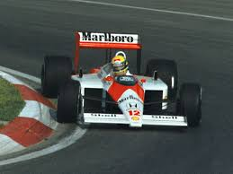
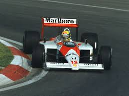

Senna foi um piloto de automobilismo reconhecido como um dos grandes esportistas da história do Brasil. Iniciou sua carreira no automobilismo por meio do kart, mas foi na Fórmula 1 que ele se transformou em um dos pilotos mais reconhecidos de todos os tempos. Ayrton Senna conquistou três títulos de Fórmula 1: em 1988, 1990 e 1991.
BIOGRAFIA
Ayrton Senna da Silva nasceu na cidade de São Paulo, no dia 21 de março de 1960. Era filho de Milton Guirado Theodoro da Silva e de Neyde Joanna Senna da Silva. Desde a infância, Ayrton Senna havia demonstrado grande interesse por carros e pelo automobilismo. Ele gostava de dirigir os carros que sua família possuía.
O interesse dele por automobilismo foi incentivado por seu pai, que chegou a construir um kart para o seu filho. Ayrton Senna começou a competir como piloto de kart quando tinha apenas 13 anos de idade, e a primeira prova oficial que ele competiu foi marcada por uma vitória de Senna. A trajetória de Ayrton Senna no kart foi exitosa, marcada por títulos paulista, brasileiro e sul-americano nessa categoria.
A carreira vitoriosa que Ayrton Senna teve no kart projetou o seu nome para outras categorias do automobilismo. Em 1981, ele competiu pela Fórmula Ford 1600, obtendo um número expressivo de vitórias. Em 1982, Ayrton Senna competiu pela Fórmula Ford 2000 e em 1983 competiu pela Fórmula 3 Inglesa.
Em 1984, em sua primeira temporada na Fórmula 1, Ayrton Senna conquistou o pódio em três ocasiões, terminando o campeonato em 9º lugar. Ayrton Senna ficou na Toleman apenas no ano de 1984, disputando por outras equipes ao longo de sua carreira. Entre 1985 e 1987, Ayrton Senna fez parte da Lotus, entre 1988 e 1993 foi parte da McLaren e em 1994 fez parte da Williams.
Na Lotus, Ayrton Senna teve um carro com melhores condições, e isso permitiu que ele conquistasse as suas primeiras vitórias na Fórmula 1. O seu auge, no entanto, veio na McLaren, equipe pela qual ele conquistou o título da Fórmula 1 por três vezes: 1988, 1990 e 1991.
A trajetória de Ayrton Senna na Fórmula 1 foi marcada pela rivalidade dele com Alain Prost, piloto francês que foi seu colega de equipe entre 1988 e 1989. Os dois pilotos disputaram de maneira intensa os títulos das temporadas de 1988, 1989 e 1990. A rivalidade entre Senna e Prost foi muito grande nos anos que competiram um contra o outro, e muitos taxaram ambos como inimigos.
Alain Prost, no entanto, afirmou que a rivalidade deles era resultado da disputa travada nas pistas e que nos últimos seis meses da vida de Senna (em que Prost já estava aposentado) eles se aproximaram bastante. Ayrton Senna também teve de enfrentar Nelson Piquet, outro brasileiro de grande destaque na Fórmula 1 durante a década de 1980.
.jpeg)
 

O FIM DE UMA ERA
A morte prematura de Ayrton Senna foi uma das grandes tragédias recentes do esporte brasileiro. Na temporada de 1994, Ayrton Senna competia pela Williams, e um acidente acabou colocando fim à vida de um dos maiores nomes do automobilismo brasileiro. A morte de Ayrton Senna aconteceu durante o GP de San Marino, na Itália, em 1º de maio de 1994.
Na corrida, Ayrton Senna perdeu o controle de seu carro em uma curva (chamada Tamburello), chocando-se contra o muro de concreto. Ele foi socorrido pelos médicos da Fórmula 1, mas poucas horas depois foi anunciada a sua morte.
Ayrton Senna e o seu sucesso no automobilismo fizeram dele um verdadeiro herói nacional. A popularidade de Ayrton Senna era tamanha que a Fórmula 1 se tornou um esporte cada vez mais popular no Brasil, com milhares de pessoas acompanhando as corridas.